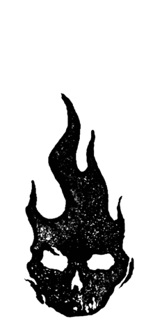
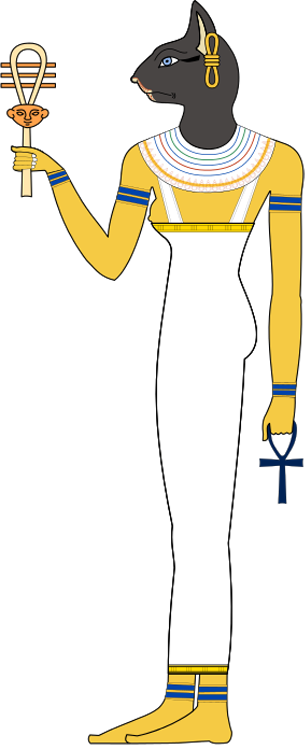

검은 고양이는
불행의 상징?

1
존경을 받는
검은 고양이

기원전 3000년 초기 이집트에서 고양이는 불운으로 생각되지 않았다. 당시에 검은 고양이는 존경을 받았으며 해충과 뱀이나 코브라 같은 위험한 동물을 죽일 수 있는 능력 때문에 칭찬을 받았다.
당시 고양이를 죽이는 것은 사형에 처해질 정도의 중범죄로 간주되었다. 일반적으로 고양이는 신의 헌신이라 여겨졌다. 고양이 얼굴을 한 바스테드는 보호와 출산, 모성을 위한 신이었다.
고양이는 매우 존경받았으며 고양이가 죽으면 사람과 같은 과정을 거쳐 미라로 만들기도 했다.고양이는 종종 소유자와 함께 뭍히기도 했다. 마치 가족이 죽은 것처럼 고양이의 죽음을 슬퍼했다.

2
검은 고양이
마녀
중세 시대는 가톨릭 교회가 아주 거대한 힘을 지니던 시기였고, 사회에 큰 반향을 일으키는 결정들을 내리는 곳이었다. 12세기 말, 프랑스에서는 “종교재판” 이라고 알려진 재판이 시작되었다. 종교재판이란 명목으로 많은 법정이 마녀와 이교도를 솎아내는 일을 맡았다.
독신의 신비한 여인들의 많은 수가 마녀라고 지명 수배되었다.그들의 운명은 화형이었다. 이런 식으로 검은 고양이들도 추적하기 시작했는데, 그 이유란 바로 수상한 여자들이 요술을 부리고 저주를 걸기 위해 검은 고양이들을 이용했다는 의심에서 나온 것이었다.
사실은 이러했다. 주거지에서 음식과 집을 찾아다니는 개와 달리 고양이는 소심하고 신중한 탓에 사람들에게서 몸을 숨겼던 것이다. 당시 사람들은 고양이들은 사실 동물의 형상으로 변신한 마녀들이라고 했다. 그렇기 때문에 밤에는 잡히지 않으며 아무 문제 없이 요술을 부릴 것이라고 생각했다.
3
흑사병
검은 고양이

교황 그레고리오 9세는 검은 고양이들이 악마와 연관이 있다고 했다. 사람들은 검은 고양이들을 두려워하기 시작했고 자연히 검은 고양이들을 없애려고 했다.
고양이의 개체 수가 눈에 띄도록 줄어들자, 쥐들의 번식이 급증하는 데는 오래 걸리지 않았다. 이와 함께 흑사병과 죽음이 뒤따랐다. 흑사병 혹은 페스트라 불리는 이 병은 유럽에서 이천 오백만 명의 사람들을 삼 년 만에 전멸시켰다.
당시에는 병이 전염된 원인이 쥐의 기생충이라는 것을 알지 못했다. 사람들은 타고난 쥐 사냥꾼인 고양이들이 전염병과 관련 있다고 믿었다. 그렇게 고양이들을 죽이기 시작했고 1400년경에는 고양이들이 거의 보이지 않을 정도였다.
사람들은 고양이가 적을수록 쥐가 많아지고 흑사병이 더 창궐한다는 것을 알지 못하였다.